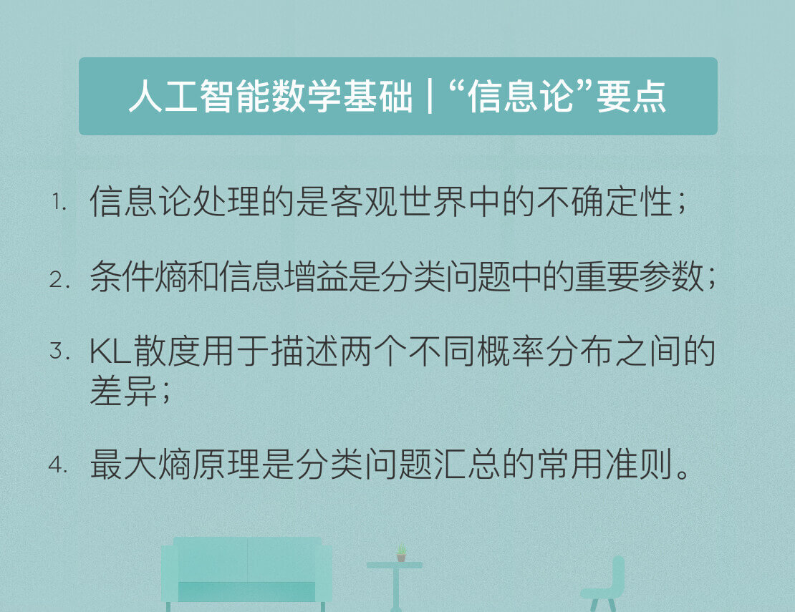

- 00 开篇词 人工智能：新时代的必修课.md.html
- 01 数学基础 九层之台，起于累土：线性代数.md.html
- 02 数学基础 月有阴晴圆缺，此事古难全：概率论.md.html
- 03 数学基础 窥一斑而知全豹：数理统计.md.html
- 04 数学基础 不畏浮云遮望眼：最优化方法.md.html
- 05 数学基础 万物皆数，信息亦然：信息论.md.html
- 06 数学基础 明日黄花迹难寻：形式逻辑.md.html
- 07 机器学习 数山有路，学海无涯：机器学习概论.md.html
- 08 机器学习 简约而不简单：线性回归.md.html
- 09 机器学习 大道至简：朴素贝叶斯方法.md.html
- 10 机器学习 衍化至繁：逻辑回归.md.html
- 11 机器学习 步步为营，有章可循：决策树.md.html
- 12 机器学习 穷则变，变则通：支持向量机.md.html
- 13 机器学习 三个臭皮匠，赛过诸葛亮：集成学习.md.html
- 14 机器学习 物以类聚，人以群分：聚类分析.md.html
- 15 机器学习 好钢用在刀刃上：降维学习.md.html
- 16 人工神经网络 道法自然，久藏玄冥：神经网络的生理学背景.md.html
- 17 人工神经网络 一个青年才俊的意外死亡：神经元与感知器.md.html
- 18 人工神经网络 左手信号，右手误差：多层感知器.md.html
- 19 人工神经网络 各人自扫门前雪：径向基函数神经网络.md.html
- 20 人工神经网络 看不见的手：自组织特征映射.md.html
- 21 人工神经网络 水无至清，人莫至察：模糊神经网络.md.html
- 22 深度学习 空山鸣响，静水流深：深度学习概述.md.html
- 23 深度学习 前方有路，未来可期：深度前馈网络.md.html
- 24 深度学习 小树不修不直溜：深度学习中的正则化.md.html
- 25 深度学习 玉不琢不成器：深度学习中的优化.md.html
- 26 深度学习 空竹里的秘密：自编码器.md.html
- 27 深度学习 困知勉行者勇：深度强化学习.md.html
- 28 深度学习框架下的神经网络 枯木逢春：深度信念网络.md.html
- 29 深度学习框架下的神经网络 见微知著：卷积神经网络.md.html
- 30 深度学习框架下的神经网络 昨日重现：循环神经网络.md.html
- 31 深度学习框架下的神经网络 左右互搏：生成式对抗网络.md.html
- 32 深度学习框架下的神经网络 三重门：长短期记忆网络.md.html
- 33 深度学习之外的人工智能 一图胜千言：概率图模型.md.html
- 34 深度学习之外的人工智能 乌合之众的逆袭：集群智能.md.html
- 35 深度学习之外的人工智能 授人以鱼不如授人以渔：迁移学习.md.html
- 36 深度学习之外的人工智能 滴水藏海：知识图谱.md.html
- 37 应用场景 你是我的眼：计算机视觉.md.html
- 38 应用场景 嘿, Siri：语音处理.md.html
- 39 应用场景 心有灵犀一点通：对话系统.md.html
- 40 应用场景 数字巴别塔：机器翻译.md.html
- 一键到达 人工神经网络复习课.md.html
- 一键到达 应用场景复习课.md.html
- 一键到达 数学基础复习课.md.html
- 一键到达 机器学习复习课.md.html
- 一键到达 深度学习之外的人工智能复习课.md.html
- 一键到达 深度学习复习课.md.html
- 一键到达 深度学习框架下的神经网络复习课.md.html
- 推荐阅读 我与人工智能的故事.md.html
- 新书 《裂变：秒懂人工智能的基础课》.md.html
- 直播回顾 机器学习必备的数学基础.md.html
- 第2季回归 这次我们来聊聊机器学习.md.html
- 结课 溯洄从之，道阻且长.md.html
- 课外谈 “人工智能基础课”之二三闲话.md.html
- （课外辅导）人工神经网络 拓展阅读参考书.md.html
- （课外辅导）数学基础 拓展阅读参考书.md.html
- （课外辅导）机器学习 拓展阅读参考书.md.html
- （课外辅导）深度学习 拓展阅读参考书.md.html
- 捐赠
05 数学基础 万物皆数，信息亦然：信息论
近年来的科学研究不断证实，不确定性才是客观世界的本质属性。换句话说，上帝还真就掷骰子。不确定性的世界只能使用概率模型来描述，正是对概率的刻画促成了信息论的诞生。
1948年，供职于美国贝尔实验室的物理学家克劳德·香农发表了著名论文《通信的数学理论》（A Mathematical Theory of Communication），给出了对信息这一定性概念的定量分析方法，标志着信息论作为一门学科的正式诞生。
香农在《通信的数学理论》中开宗明义：“通信的基本问题是在一点精确地或近似地复现在另一点所选取的消息。消息通常有意义，即根据某种体系，消息本身指向或关联着物理上或概念上的特定实体。但消息的语义含义与工程问题无关，重要的问题是一条消息来自于一个所有可能的消息的集合。”
这样一来，所有类型的信息都被抽象为逻辑符号，这拓展了通信任务的范畴与信息论的适用性，也将信息的传播和处理完全剥离。
信息论使用“信息熵”的概念，对单个信源的信息量和通信中传递信息的数量与效率等问题做出了解释，并在世界的不确定性和信息的可测量性之间搭建起一座桥梁。
在生活中，信息的载体是消息，而不同的消息带来的信息即使在直观感觉上也是不尽相同的。比如，“中国男子足球队获得世界杯冠军”的信息显然要比“中国男子乒乓球队获得世界杯冠军”的信息要大得多。
究其原因，国足勇夺世界杯是如假包换的小概率事件（如果不是不可能事件的话），发生的可能性微乎其微；而男乒夺冠已经让国人习以为常，丢掉冠军的可能性才是意外。因此，以不确定性来度量信息是一种合理的方式。不确定性越大的消息可能性越小，其提供的信息量就越大。
香农对信息的量化正是基于以上的思路，他定义了“熵”这一信息论中最基本最重要的概念。“熵”这个词来源于另一位百科全书式的科学家约翰·冯诺伊曼，他的理由是没人知道熵到底是什么。虽然这一概念已经在热力学中得到了广泛使用，但直到引申到信息论后，熵的本质才被解释清楚，即一个系统内在的混乱程度。
在信息论中，如果事件\(A\)发生的概率为\(p(A)\)，则这个事件的自信息量的定义为
\[ h(A) = - \\log_2 p(A) \]
如果国足闯进世界杯决赛圈，1:1000的夺冠赔率是个很乐观的估计，用这个赔率计算出的信息量约为10比特；而国乒夺冠的赔率不妨设为1:2，即使在这样高的赔率下，事件的信息量也只有1比特。两者之间的差距正是其可能性相差悬殊的体现。
根据单个事件的自信息量可以计算包含多个符号的信源的信息熵。信源的信息熵是信源可能发出的各个符号的自信息量在信源构成的概率空间上的统计平均值。如果一个离散信源\(X\)包含\(n\)个符号，每个符号\(a_i\)的取值为\(p(a_i)\)，则\(X\)的信源熵为
\[H(X) = -\\sum\\limits_{i = 1}^n p(a_i) \\log_2 p(a_i)\]
信源熵描述了信源每发送一个符号所提供的平均信息量，是信源总体信息测度的均值。当信源中的每个符号的取值概率相等时，信源熵取到最大值\(\\log _2 n\)，意味着信源的随机程度最高。
在概率论中有条件概率的概念，将条件概率扩展到信息论中，就可以得到条件熵。如果两个信源之间具有相关性，那么在已知其中一个信源\(X\)的条件下，另一个信源\(Y\)的信源熵就会减小。条件熵\(H(Y|X)\)表示的是在已知随机变量\(X\)的条件下另一个随机变量\(Y\)的不确定性，也就是在给定\(X\)时，根据\(Y\)的条件概率计算出的熵再对\(X\)求解数学期望：
\[H(Y|X) = \\sum_{i = 1}^ n p(x_i) H(Y|X = x_i) \]
\[= -\\sum_{i = 1}^ n p(x_i) \\sum_{j = 1}^ m p(y_j|x_i) \\log_2 p(y_j|x_i) \]
\[ = - \\sum_{i = 1}^ n \\sum_{j = 1}^ m p(x_i, y_j) \\log_2 p(y_j|x_i) \]
条件熵的意义在于先按照变量\(X\)的取值对变量\(Y\)进行了一次分类，对每个分出来的类别计算其单独的信息熵，再将每个类的信息熵按照\(X\)的分布计算其数学期望。
以上课为例，学生在教室中可以任意选择座位，那么可能出现的座位分布会很多，其信源熵也就较大。如果对座位的选择添加一个限制条件，比如男生坐左边而女生坐右边，虽然左边的座位分布和右边的座位分布依然是随机的，但相对于未加限制时的情形就会简单很多。这就是分类带来的不确定性的下降。
定义了条件信息熵后，就可以进一步得到互信息的概念
\[I(X; Y) = H(Y) - H(Y|X)\]
互信息等于\(Y\)的信源熵减去已知\(X\)时\(Y\)的条件熵，即由\(X\)提供的关于\(Y\)的不确定性的消除，也可以看成是\(X\)给\(Y\)带来的信息增益。互信息这个名称在通信领域经常使用，信息增益则在机器学习领域中经常使用，两者的本质是一样的。
在机器学习中，信息增益常常被用于分类特征的选择。对于给定的训练数据集\(Y\)，\(H(Y)\)表示在未给定任何特征时，对训练集进行分类的不确定性；\(H(Y|X)\)则表示了使用特征\(X\)对训练集\(Y\)进行分类的不确定性。信息增益表示的就是特征\(X\)带来的对训练集\(Y\)分类不确定性的减少程度，也就是特征\(X\)对训练集\(Y\)的区分度。
显然，信息增益更大的特征具有更强的分类能力。但信息增益的值很大程度上依赖于数据集的信息熵\(H(Y)\)，因而并不具有绝对意义。为解决这一问题，研究者又提出了信息增益比的概念，并将其定义为\(g(X, Y) = I(X; Y) / H(Y)\)。
另一个在机器学习中经常使用的信息论概念叫作“Kullback-Leibler散度”，简称KL散度。KL散度是描述两个概率分布\(P\)和\(Q\)之间的差异的一种方法，其定义为
\[D_{KL}(P||Q) = \\sum_{i = 1}^n p(x_i) \\log_2 \\frac{p(x_i)}{q(x_i)}\]
KL散度是对额外信息量的衡量。给定一个信源，其符号的概率分布为\(P(X)\)，就可以设计一种针对\(P(X)\)的最优编码，使得表示该信源所需的平均比特数最少（等于该信源的信源熵）。
可是当信源的符号集合不变，而符合的概率分布变为\(Q(X)\)时，再用概率分布\(P(X)\)的最优编码对符合分布\(Q(X)\)的符号编码，此时编码结果的字符数就会比最优值多一些比特。
KL散度就是用来衡量这种情况下平均每个字符多用的比特数，也可以表示两个分布之间的距离。
KL散度的两个重要性质是非负性和非对称性。
非负性是指KL散度是大于或等于0的，等号只在两个分布完全相同时取到。
非对称性则是指\(D_{KL}(P||Q) \\ne D_{KL}(Q||P)\)，即用\(P(X)\)去近似\(Q(X)\)和用\(Q(X)\)去近似\(P(X)\)得到的偏差是不同的，因此KL散度并不满足数学意义上对距离的定义，这一点需要注意。
事实上，\(D_{KL}(P||Q)\) 和\(D_{KL}(Q||P)\)代表了两种不同的近似方式。要让\(D_{KL}(P||Q)\)最小，需要让\(Q(X)\)在\(P(X)\)不等于0的位置同样不等于0；要让\(D_{KL}(Q||P)\)最小，则需要让\(Q(X)\)在\(P(X)\)等于0的位置同样等于0。
除了以上定义的指标之外，信息论中还有一个重要定理，叫作“最大熵原理”。最大熵原理是确定随机变量统计特性时力图最符合客观情况的一种准则。对于一个未知的概率分布，最坏的情况就是它以等可能性取到每个可能的取值。这个时候的概率分布最均匀，也就是随机变量的随机程度最高，对它进行预测也就最困难。
从这个角度看，最大熵原理的本质在于在推断未知分布时不引入任何多余的约束和假设，因而可以得到最不确定的结果，预测的风险也就最小。投资理财中的名言“不要把所有鸡蛋放在同一个篮子里”，就可以视为最大熵原理的一个实际应用。
将最大熵原理应用到分类问题上就可以得到最大熵模型。在分类问题中，首先要确定若干特征函数作为分类的依据。为了保证特征函数的有效性，其在模型真实分布\(P(X)\)上的数学期望和在由训练数据集推导出的经验分布\(\\tilde P(X)\)上的数学期望应该相等，即对给定特征函数数学期望的估计应该是个无偏估计量。
这样一来，每一个特征函数就对应了一个约束条件。分类的任务就是在这些约束条件下，确定一个最好的分类模型。由于除了这些约束条件之外，没有任何关于分类的先验知识，因而需要利用最大熵原理，求解出不确定性最大的条件分布，即让以下函数的取值最大化
\[H(p) = -\\sum\\limits_{x, y} \\tilde p(x) p(y|x) \\log_2 p(y|x) \]
式中的\(p(y|x)\)就是分类问题要确定的目标条件分布。计算上式的最大值实质上就是一个约束优化问题，由特征函数确定的约束条件可以通过拉格朗日乘子的引入去除其影响，转化为无约束优化问题。从数学上可以证明，这个模型的解是存在且唯一的。
今天我和你分享了人工智能必备的信息论基础，着重于抽象概念的解释而非数学公式的推导，其要点如下：
- 信息论处理的是客观世界中的不确定性；
- 条件熵和信息增益是分类问题中的重要参数；
- KL散度用于描述两个不同概率分布之间的差异；
- 最大熵原理是分类问题中的常用准则。
信息论建立在概率的基础上，但其形式并不唯一，除了香农熵外也有其他关于熵的定义。那么概率与信息之间的关系对人工智能有什么启示呢？
欢迎发表你的观点。

© 2019 - 2023 Liangliang Lee. Powered by gin and hexo-theme-book.